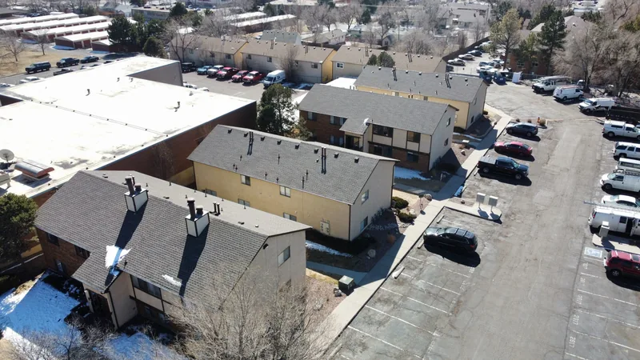

A drone helps on some roofs and not on others. On a steep roof, a fragile one or a big roof after a storm, a camera in the air gets a safer look and a better record. On an ordinary roof you can walk, a person on the shingles with their hands still learns more.
How a drone inspection works
A roofing drone is a small aircraft carrying a camera. The pilot launches it from the driveway or the yard, and it flies over the roof taking close photos of each slope, the ridges and valleys, the flashing at walls and chimneys, and the pipe boots and vents. Inspection software can fly it in a set pattern so the pictures overlap and nothing gets skipped, while the pilot watches the whole time.
Then the photos come down to a tablet or a laptop, and the real work starts. Someone who knows roofs goes through them slope by slope.
Where a drone earns its keep
Steep roofs
Some roofs are too steep to walk without harnesses and roof jacks, and each trip up is a risk for whoever's climbing. A drone gets the same close view of the top of a steep roof without anybody standing on it.
Fragile roofs
Old slate, clay tile and some brittle shingles crack under a boot. Walking a fragile roof to inspect it can cause the very damage you were looking for. From the air, nothing gets stepped on.
Big roofs and storm records
After hail or high wind, your insurance company wants to see damage on each slope, including the ones you can't see from the yard. A drone can photograph a large roof slope by slope in one visit, with each image dated. That's a clean record to hand your insurer. It's evidence, and your insurer still decides the claim. Hail in East Tennessee covers what hail damage looks like and what to photograph yourself.
Low-slope roofs
On a flat or nearly flat roof, standing water and open seams show up well from above. On a big commercial roof, walking the whole surface takes a long time.

What IMGING measures
IMGING is roof inspection software from Loveland Innovations. According to Loveland's own page, it gives detailed roof dimensions, areas, slopes and pitches from the inspection, and it can also measure siding, walls, windows, doors and garages from the same visit.
Those measurements matter more than they sound. A roof price starts with how big the roof is and how steep, and getting those numbers from the air means nobody pulls a tape across a slope they shouldn't be standing on. Software measurements are a starting point, and a careful roofer still checks them against the house before pricing.
The software doesn't decide what's damaged. A person who knows roofs looks at the photos and makes that call.
Who's allowed to fly it
Flying a drone for a business falls under the FAA's Part 107 rules. The FAA's page for certificated remote pilots says Part 107 covers small drones under 55 pounds flown for work or business. The pilot needs a Remote Pilot Certificate, and the FAA's steps for getting one include being at least 16, passing an aeronautical knowledge test, and finishing online recurrent training every 24 calendar months to stay current. If anyone is flying over your house for pay, it's fair to ask to see that certificate.
When a roof calls for it, we bring in a drone and a certified pilot.
What a drone can't tell you
A camera sees the surface, and it can't feel anything. Some problems still need someone up close:
- Soft decking. You find a rotten spot under the shingles by the way it gives underfoot, and no photo shows that.
- A leak you have to trace. Water often gets in at one spot and shows up on the ceiling somewhere else, and following it means getting into the attic with a flashlight.
- Shingles that lost their seal. They can lie flat in a photo and still lift right up by hand.
- Hail hits that need to be pressed. A soft bruise in the mat feels different from a scuff, and a picture can't always tell them apart.
- The attic itself, with its daylight through the boards, stains on the rafters, and whether the space can breathe.
When any of those are in question, the ladder comes out, and whoever's inspecting should tell you why they're going up.

Where a ladder still wins
My opinion: on a one-story house with a roof you can walk, I'd rather have someone on it than a camera over it. They can lift a tab, press a bruise, push on a soft spot by the chimney and look inside a pipe boot. Most roofs we check from a ladder and on foot.
A drone is a tool for the cases above, not a replacement for hands. Ask whoever you hire which they plan to use on your roof and why. A good answer depends on your roof, not on the gear a company happens to own.
Keeping an eye on it yourself
You don't need a drone to watch your own roof. A pair of binoculars from the driveway catches a lot: missing shingles, a lifted ridge cap, a gutter pulling away. A once-a-year roof check you can do from the driveway walks through it slope by slope.

Photos and your insurance
A clear set of dated photos helps when you talk to your insurer after a storm. Photos don't settle the claim, though. Your adjuster and your policy do that. If a storm just came through, start with the storm damage page, and book a free roof inspection to find out whether there's anything worth a claim.
Questions
Do I need to be home for a drone flight?
Not for the outside photos, though you'll want to go over what they show afterward. If someone needs to get into the attic, someone has to let them in.
Will the drone photograph my neighbors' houses?
The camera should stay pointed at your roof. Ask the pilot how they handle the property next door before the flight.
Is a drone inspection more accurate than walking the roof?
For photos and measurements on a steep or large roof, it can be. For soft decking or tracing a leak, someone still has to be up close.